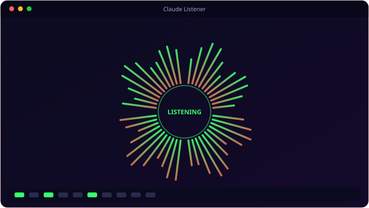

See It In Action
A look inside Claude Listener.

What It Does
Everything Claude Listener brings to the table.
👂
Wake-Word Listening
Listens continuously for “Hey Claude” (and common mishears), beeps, then records your command.
⌨️
Auto-Paste + Enter
Transcribes via Google Speech Recognition, pastes into the focused window and auto-sends after a short, cancellable countdown.
📊
Live Overlay
A floating overlay shows a 12-band spectrum analyser, a mute button and a sensitivity slider while you talk.
🤫
Smart Silence Detection
Stops recording after 5 seconds of silence, with a 60-second ceiling for longer thoughts.
🔇
Mute & Pause
A separate muted state pauses wake-word detection from the tray or overlay whenever you need quiet.
🪟
Lives in the Tray
Runs quietly in the system tray with a full right-click menu.
Get Ready
System requirements.
💻
Minimum
- OS: Windows 10 (64-bit) or Windows 11
- CPU: Dual-core, 2.0 GHz
- Memory: 4 GB RAM
- Graphics: Any DirectX 11 / integrated GPU
- Storage: 250 MB + space for your files
- Display: 1280×768 or higher
- Audio: a working microphone
- Network: internet (Google Speech Recognition)
🚀
Recommended
- OS: Windows 11 (64-bit)
- CPU: Quad-core, 3.0 GHz
- Memory: 8 GB RAM
- Graphics: Dedicated GPU (optional)
- Storage: SSD with a few GB free
- Display: 1920×1080 or higher
Under the Hood
The details.
| Wake phrases | “Hey Claude” / “Hi Claude” + common mishears |
| Transcription | Google Speech Recognition |
| Overlay | 12-band FFT spectrum, mute, sensitivity slider |
| Silence | 5s stop threshold, 60s max command |
| Platform | Windows 10 / 11 |
Get Claude Listener.
Say "Hey Claude" and dictate straight into the chat box.
⬇ Download Claude ListenerClaudeListener_Setup.exe · free · Windows 10/11